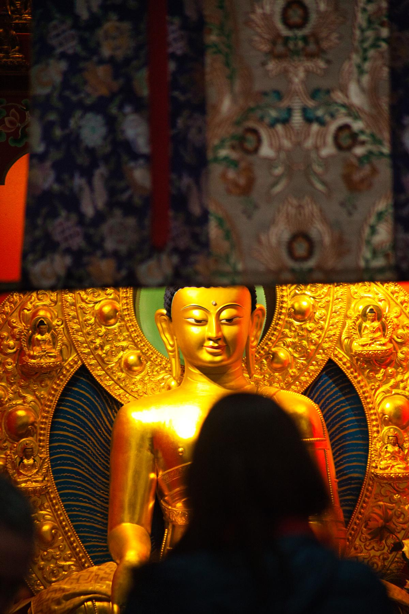

Méditation
Sessions de méditation silencieuse, pratique du Soutra du Cœur, ouvertes à tous.
Enseignements
Visualisations, exercices respiratoires, récitations de mantras avec nos maîtres.
Retraites & nature
Journées méditatives en Belledonne, Chartreuse et retraites en lien avec Drukpa Plouray.
Dialogue interreligieux
Colloques au Centre Théologique de Meylan et voyages interreligieux (Rome 2025, Montchardon 2026).
Ateliers culturels
Cuisine, calligraphie, poésie, musique et balades méditatives — le bouddhisme vivant.
Live to Love
Actions altruistes bimensuelles portées par Cécile Dupart dans l'esprit du mouvement humanitaire.


Intéressé par nos activités ?
Nous contacter